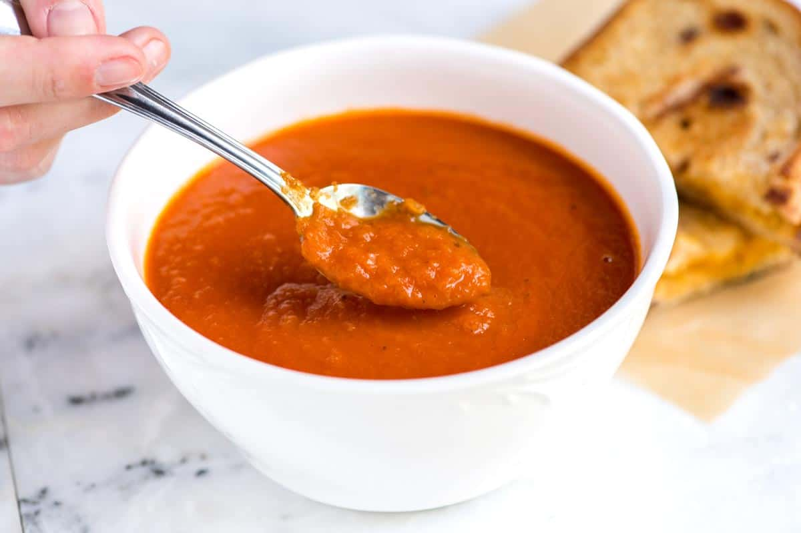

Cream of Tomato Soup

Description
Old fashioned easy to make creamy tomato soup that will warm your heart.
Ingredients
- 2 tablespoons butter
- 1 onion, chopped
- 2 tablespoons all-purpose flour
- 1 quart tomato juice
- salt to taste
- 2 cups milk
Directions
- In a Dutch oven, over medium heat, saute onions in butter until translucent. Remove from the heat. Stir in the flour so that no lumps remain, then slowly whisk in the tomato juice. Return to the heat and add salt to taste. Cook until just boiling but turn off the heat before it boils. Let cool 10 minutes then slowly stir in milk. Serve immediately.
Return to main page